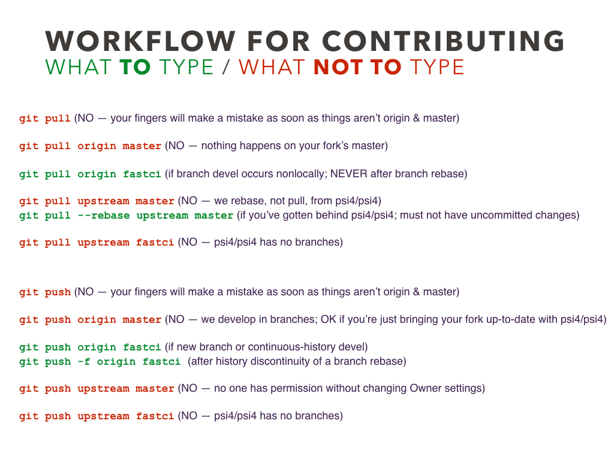
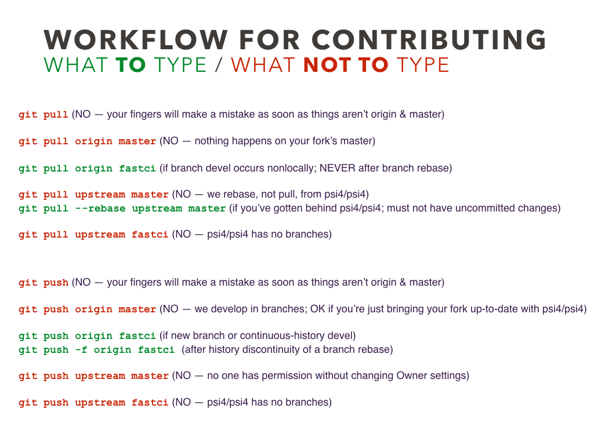

Obtaining PSI4¶
How to obtain Psi4: start with find-the-code quiz, end in {top-level-psi4-dir}¶
A better decision tree is available at psicode.org/installs/latest, though the below remains valid.
Take a quiz to find the best version of the codebase for your needs, be it binary, tarball, or version-controlled repository. Or, select outright among:
Fork from GitHub Repository (only path to develop PSI4)
Find-the-code Quiz¶
A better decision tree is available at psicode.org/installs/latest, though the below remains valid.
I just want to run the code. I may tweak the Python, but I’m not developing anything to contribute back to the code base.
Provided I still get good, threaded BLAS/LAPACK, OpenMP parallelism, and optimization for a variety of processor architectures, I’m willing to forgo architecture tuning wizardry to avoid compiling it myself.
I’m on Linux or Mac or Windows with Ubuntu Bash Shell.
I’m familiar with conda and want to manage PSI4 as an ordinary conda package. — Goto Binary-Package
I just want a PSI4 installer. — Goto Binary-Installer
I want to compile it myself to eke out best performance on my computer. I accept responsibility for navigating compiler, threading, and BLAS/LAPACK compatibility
I’m willing to have minimal dealings with git (e.g., commands
git cloneandgit pull) in return for easy access in future to new features and bug fixes. — Goto Clone-from-GitHubI don’t want to deal with this newfangled git, just give me a tarball of the source code — Goto Tarball-from-GitHub
I want to run and develop in PSI4.
In keeping with the open-source philosophy, I don’t mind my code being as public as Psi4 itself during the development process. — Goto Fork-from-GitHub
I want to develop using PSI4 infrastructure and libraries, not on them; I think a plugin might do.
I’ve got a PSI4 compilation. Use it, then consult plugins
I’d rather not compile PSI4 or I don’t have compilers — Goto Binary-Package then consult plugins through conda
I really like parentheses and/or DBOC, so I want Psi3. — Psi3 is available from sourceforge, but you’re on your own.
Binary Installer¶
Get Initially
Just go to http://www.psicode.org/downloads.html, select “Installer”, “Stable Release”, and your choice of architecture and Python version, and follow the instructions there.
Build
Not applicable as binary is pre-built.
Get Updates directions
>>> conda update psi4
Contribute Back
Not applicable as not under git control.
Conda Binary Package¶
Get Initially
The pre-compiled conda packages at https://anaconda.org/psi4/psi4 can be installed into an existing Anaconda or Miniconda distribution according to directions. Locally, install into a conda environment as below.
>>> conda create -n p4env psi4 -c psi4 >>> conda activate p4env
>>> # nightly build >>> conda create -n p4env psi4 -c psi4/label/dev >>> # Windows >>> conda create -n p4env psi4 -c psi4 -c conda-forge
Build
Not applicable as binary is pre-built.
Get Updates directions
>>> conda update psi4 -c psi4
Contribute Back
Not applicable as not under git control.
Clone from GitHub Repository¶
Get Initially
The PSI4 repository at https://github.com/psi4/psi4 works like every other GitHub repo. Locally, clone as below.
# use https or ssh >>> git clone https://github.com/psi4/psi4.git >>> cd psi4 # this is your {top-level-psi4-dir}
Build directions
Get Updates
# on branch master >>> git pull origin masterContribute Back
Contributions cannot be made directly to the main repository. Fork instead.
To convert clone to fork, go to https://github.com/psi4/psi4, and hit the Fork button to store a PSI4 repository in your GitHub account.
>>> git remote rename origin upstream >>> git remote add origin https://github.com/johndoe/psi4.git
Fork from GitHub Repository¶
Get Initially
Go to https://github.com/psi4/psi4, and hit the Fork button to store a PSI4 repository in your GitHub account. Locally, proceed to clone:
# replace johndoe # use https or ssh >>> git clone https://github.com/johndoe/psi4.git >>> cd psi4 # this is your {top-level-psi4-dir}
Set up a connection between your forked repository and the parent repository.
>>> git remote add upstream https://github.com/psi4/psi4.git
Build directions
Get Updates
Locally, update your fork from the parent repository and store on GitHub at your fork.
# on branch working_branch >>> git pull --rebase upstream master >>> git push origin working_branchRemember: Working in the master branch of a fork is considered bad practice.
Contribute Back
PSI4 contributions process here and here. Consider preparing your contribution in a branch then issue a GitHub pull request.
Tarball from GitHub Repository¶
Get Initially
Discouraged! From the PSI4 repository at https://github.com/psi4/psi4, hit the “Clone or download” then “Download ZIP” button. Locally, unpack as below.
>>> unzip psi4-master.zip >>> cd psi4-master # this is your {top-level-psi4-dir}
Build directions
Get Updates
Download new tarball and rebuild.
Contribute Back
Not applicable as source not under git control.
What is the suggested GitHub workflow¶

 
